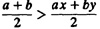
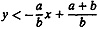
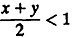
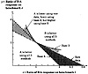
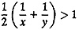
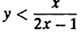

| Previous | Table of Contents | Next |
Derivation 11.1 Assume the performance metric is an HB (higher is better) metric. The resulting LB metric can be derived in a manner similar to that presented here.
Consider the case of two systems A and B on two benchmarks I and J. Suppose the performance of System A on the two benchmarks is a and b, respectively. The relative performance of System B on the two benchmarks is x and y, respectively. This leads to the raw performance shown in Table 11.10. Using the raw data, System A is better if and only if

or

Figure 11.2 shows a graphical representation of Equation (11.1). Both axes in the figure show the relative performance of System B with System A as a base. The horizontal axis shows x—relative performance of B on benchmark I. The vertical axis shows y—relative performance of B on benchmark J.
Equation (11.1) divides the possible space into two regions on the two sides of the line y = -(a/b)x + (a + b)/b. System A is better than system B below the line and worse above the line.
If System A is used as a base as shown in Table 11.10, System A will be considered better if and only if

or
y < 2 - x
Graphically, the region below the line y = 2 - x in Figure 11.2 represents the subspace in which System A will be considered better. Note that this subspace is not identical to that given by Equation (11.1). The additional area covered by this equation is shown shaded in Figure 11.2. If the measurements fall in this shaded area, System A will be considered worse than System B using raw data but will be considered better using system A as the base. This is one possible region where ratio games will lead to contradictory conclusions. Notice that this region is a proper subset of the region (x < 1, y > 1). That is, the performance of System B is better on one benchmark and worse on the other.

FIGURE 11.2 Strategies for ratio games. Contradictory conclusions can be obtained using different methods only in shaded regions.
If System B is used as a base as shown in Table 11.10, System A will be considered better if and only if:

or

Graphically, Equation (11.3) represents a hyperbola as shown in in Figure 11.2. In the region below this hyperbola, System A will be considered better. This region covers a bigger area for System A. Once again the region above the lines corresponding to Equations (11.1) and (11.2) and below this hyperbola represents the subspace in which contradictory results will be reached by using different bases and raw results.
The main reason why the analysis of ratios, as presented so far, results in contradicting results is that the approach of taking a mean of the ratio is wrong. The approach completely ignores the fact that the performance is affected by several factors as well as by experimental errors. For example, in the case of execution time of a workload on a system, the two factors are the workload and the system. A statement about one factor, for example, the comparative power of systems involved, can be made only if the effects of different factors and errors are first isolated. The isolation requires developing a model of the way these factors and the experimental errors interact with each other. Techniques for this require knowledge of several probabilistic, statistical, and experimental design concepts. In parts III and IV of this book, these concepts are developed and explained. After reading these two parts, you will be able to correctly analyze the data presented in this chapter. In particular, taking means of ratios is discussed in Section 12.7, comparing two systems in the presence of variability is discussed in Chapter 13, and isolating effects of two factors is discussed in Chapters 16 to 23. An analysis of the code size comparison data of Table 11.2 is presented in Exercise 21.3.
| TABLE 11.11 Raw Execution Times for Exercise 11.1 | |||
|---|---|---|---|
| Benchmark | System A | System B | System C |
| I | 50 | 100 | 150 |
| J | 100 | 150 | 50 |
| K | 150 | 50 | 100 |
| Sum | 300 | 300 | 300 |
| Average | 100 | 100 | 100 |
| Previous | Table of Contents | Next |
){kind=link}
){kind=link}